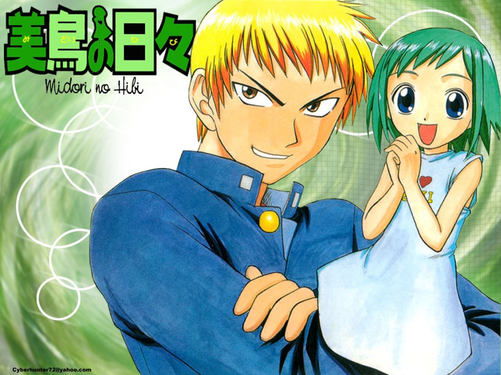

Английское название: Midori no Hibi
Русское название: Дни Мидори
Число серий: ТВ (13 эп.), 25 мин.
Жанр: Комедия, Романтика, Драма, Этти
Создатели:Кобаяси Цунэо, Иноэ Кадзуро
Оценка:8.4/10
Год выпуска: 2004

Описание аниме: Сэйдзи, парень хоть куда. В детстве был ужасным добряком, из-за чего его постоянно обижали. Защищала Сэйдзи всегда его старшая сестра, но однажды ей это очень надоело. И под чутким руководством сестры, Сэйдзи начал тренироваться, становясь намного сильнее и жестче. Каждодневные тренировки выработали в нем боевую закалку, крепость духа, и волю к победе. Прошло достаточное количество лет, Сэйдзи теперь учится в старшей школе. Он теперь не тот слизняк и добряк что в детстве. Теперь перед ним трепещет не только его школа, но и все другие школы в окрестностях. Но какой бы он не был сильный и популярный с девушками ему не как не везет, может его просто боятся. Он даже не замечает, что каждый день на станции метро за ним наблюдает юная красавица Мидори. Которой просто не хватает смелости подойти к нему и все рассказать о своих чувствах. Мидори лелеет только одну мечту в своем сердце, это быть рядом с Сэйдзи. Иногда нам стоит быть осторожней со своими мечтами, потому что они могут, воплотится в жизнь, но не совсем, так как нам бы хотелось. Так и произошло в случае с Мидори и Сэйдзи. однажды он, проснувшись, обнаружил у себя место правой руки маленькую девушку, которую зовут Мидори...
Назад